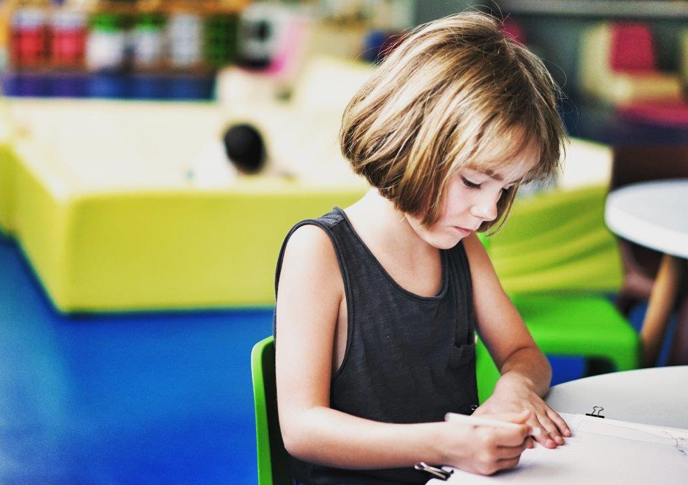
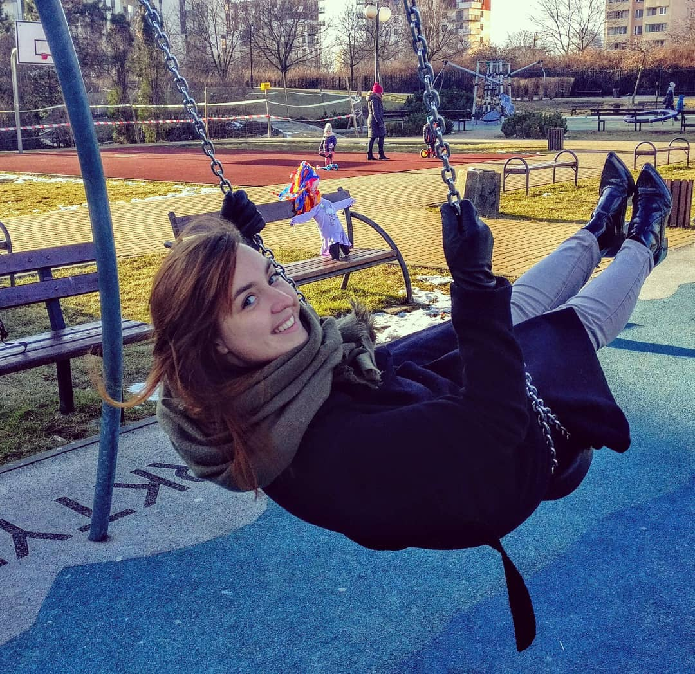
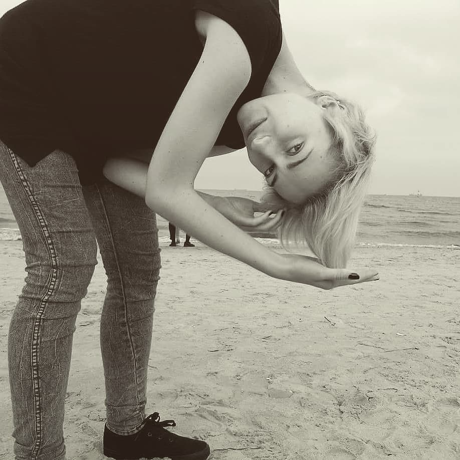

Pierwsze wydarzenie
Krótki opis pierwszego wydarzenia
Krótki opis pierwszego wydarzenia
Krótki opis drugiego wydarzenia
Tu będzie sekcja z rezerwacjami i planami zajęć
Ania
Cześć, jestem Ania! Pracuję z dziećmi od 2013 roku, ale prawda jest taka, że czuję jakbym robiła to od zawsze! Fascynują mnie różne kultury i swoją wiedzę z chęcią przekazuję dzieciom poprzez wspaniałą zabawę. Wszelkie prace plastyczne zawsze były moją pasją. Z zamiłowania robię zabawki i filcowe, edukacyjne książeczki dla dzieci. W RAJU to coś o czym zawsze z Weroniką marzyłyśmy!
Weronika
Cześć, mam na imię Weronika i praca z dziećmi to moja pasja, dlatego na codzień jestem zwariowaną ciocią w jednym z warszawskich przedszkoli. Poza dzieciakami kocham też historie i podróżowanie, stad pomysł na stworzenie warsztatoteki, która pozwala mi i mojej przyjaciółce Ani na łączenie naszych pasji. Wybierzcie się w podróż razem z nami i przeżyjcie niesamowite Etno przygody.